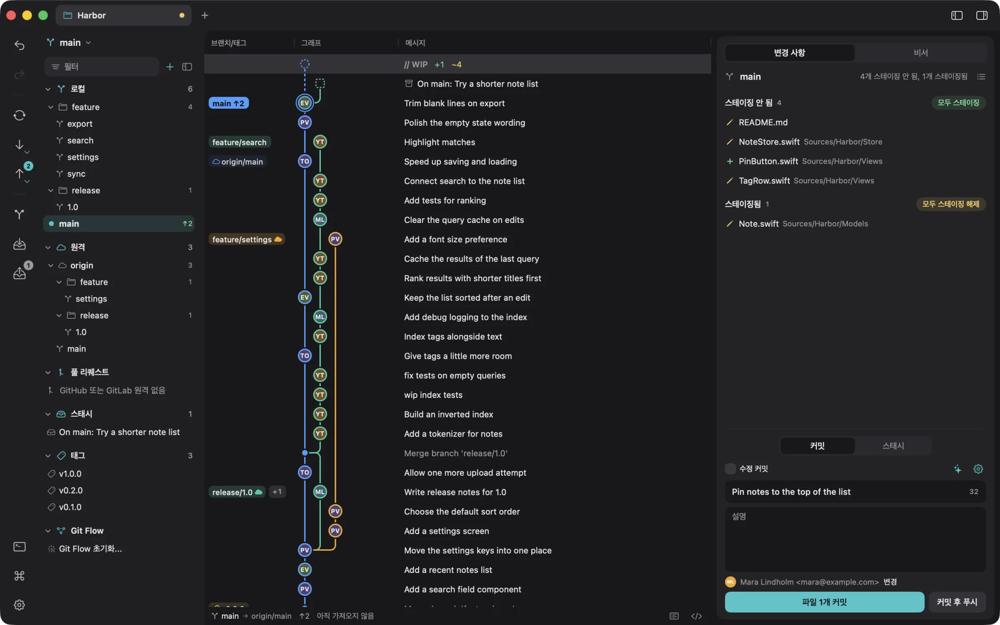
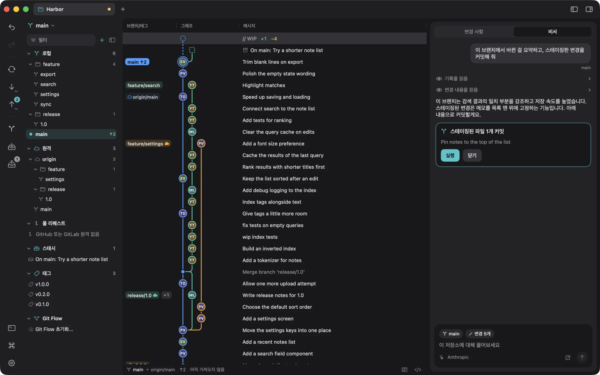
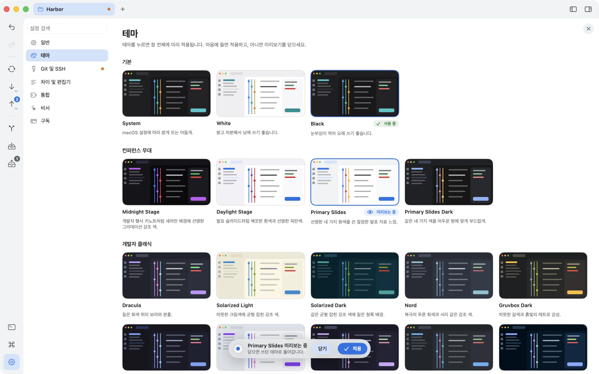
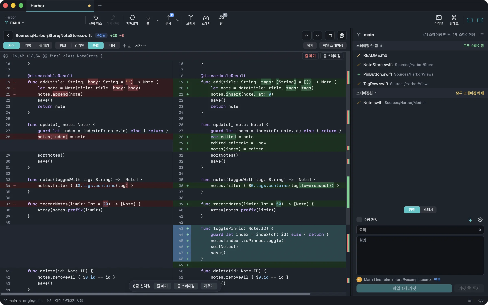
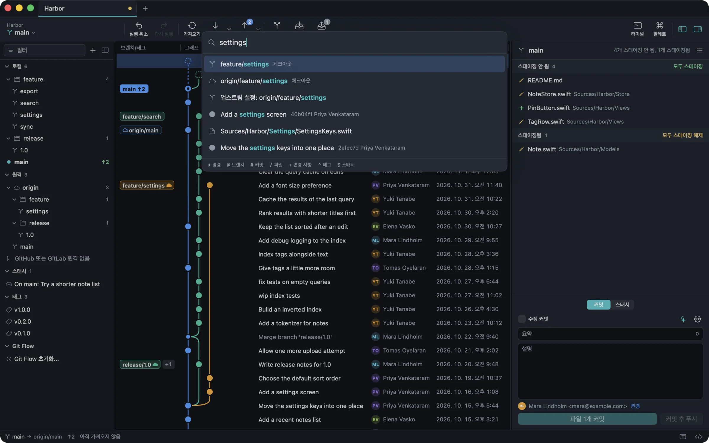
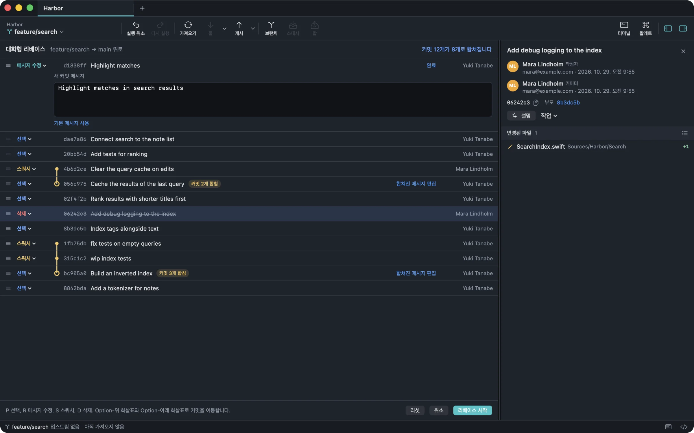
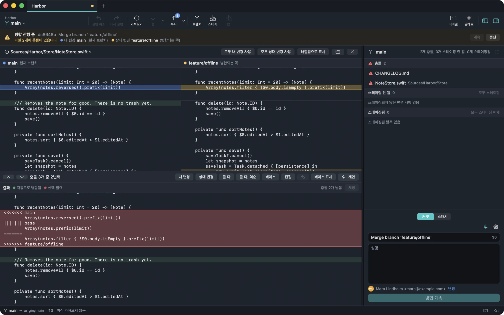

저장소 전체를 한눈에.
레인이 브랜치를 곧게 유지해서 히스토리가 읽기 쉽고, 커밋마다 GitHub, GitLab, Gravatar의 작성자 사진이 보입니다. 검색하고, 열을 관리하고, 브랜치를 숨기거나 단독으로 볼 수 있습니다. 참조를 다른 참조로 끌어다 놓으면 병합이나 리베이스가 됩니다.
v2.1.0 새 화면, 테마, 그리고 비서
읽기 쉬운 커밋 그래프, 줄 단위 스테이징, 잘못된 작업을 되돌리는 실행 취소까지 갖춘 네이티브 Git 클라이언트입니다.
일상적인 Git은 무료입니다. 대상 신규 구독자의 14일 Pro 체험은 앱에서 확인하기 전에는 시작되지 않습니다.

레인이 브랜치를 곧게 유지해서 히스토리가 읽기 쉽고, 커밋마다 GitHub, GitLab, Gravatar의 작성자 사진이 보입니다. 검색하고, 열을 관리하고, 브랜치를 숨기거나 단독으로 볼 수 있습니다. 참조를 다른 참조로 끌어다 놓으면 병합이나 리베이스가 됩니다.
비서는 기록, 변경 사항, 브랜치, 파일과 연결한 MCP 서버를 스스로 읽습니다. 브랜치 생성부터 푸시까지 저장소를 바꾸는 일은 카드로 보여 주고, 실행을 눌러야 진행하며 되돌리기 기록에 남습니다.

화이트와 블랙은 무료입니다. 컨퍼런스 무대 느낌, Dracula, Nord, Solarized 등을 적용하기 전에 창 전체에 미리 입혀 보고, Pro에서는 나만의 테마도 만들 수 있습니다.

나란히 보는 디프에서 파일, 헝크, 줄 하나까지 골라 스테이징합니다. 파일 이력과 블레임은 바로 옆 탭에 있습니다.

팔레트 하나로 명령, 브랜치, 커밋, 파일, 변경 사항, 태그, 스태시를 찾습니다. 접두사를 입력하면 범위가 좁혀집니다.

커밋 순서 변경, 메시지 수정, 스쿼시, 제외를 목록에서 정합니다. 실행하기 전에 결과가 어떻게 될지 보입니다.

3-way 편집기에서 양쪽과 병합 결과를 함께 봅니다. 변경마다 ours, theirs, 둘 다, base 중에서 고르고, 병합 전에 충돌 경고도 받습니다.

작업을 바꾸면 오른쪽 히스토리가 바로 달라집니다. Branchlane Pro의 인터랙티브 리베이스도 이렇게 실행 전에 결과를 보여 줍니다.
P pick S squash D drop
병합과 리베이스가 그래프에서 끌어다 놓는 것으로 시작됩니다. 저장소 상태를 보면서 브랜치를 만들고, 전환하고, 삭제하세요.
커밋, 리셋, 병합, 리베이스, 변경 취소를 되돌리고 다시 실행할 수 있습니다. 로컬 변경은 먼저 스냅샷으로 보관합니다.
Mac이 SSH 또는 HTTPS로 원격과 직접 연결합니다. 중간에 거치는 서비스가 없습니다.
오른쪽 패널, 커맨드 팔레트, 커밋, 디프, 충돌 화면에서 내 로컬 모델이나 API 키로 물어보세요. 스스로 읽어 보고, 무엇이든 바꾸기 전에는 묻습니다. 커밋 메시지 초안과 변경 설명은 Apple 온디바이스 모델로도 됩니다.
저장소 데이터는 사용자가 요청할 때, 사용자가 고른 곳으로만 Mac을 떠납니다.
Branchlane 2.1은 2.0 엔진 위에 한결 차분한 창과 저장소에 대해 물어볼 수 있는 비서를 더하고, 중간에 막히던 Git 작업을 끝까지 이어 가게 했습니다.
버튼 레일과 그 옆 브랜치 목록, 카드 안의 그래프, 떠 있는 커밋 패널. 설정은 창 안에서 열립니다.
커밋 작성자의 GitHub, GitLab, Gravatar 사진을 보여 주고, 없으면 이니셜을 보여 줍니다.
화이트와 블랙은 무료입니다. 16종을 창 전체에 미리 입혀 보고, Pro에서 적용하거나 나만의 테마를 만드세요.
저장소에 대해 묻고, 연결한 MCP 서버의 도구도 쓰게 하세요. 모든 변경은 실행을 눌러야 진행됩니다.
HTTPS 리모트의 사용자명과 토큰, SSH 키 암호를 실패한 그 자리에서 넣고 다시 시도하세요. 체크아웃, 풀, 병합, 리베이스 뒤 서브모듈도 맞춥니다.
브랜치와 스태시를 여러 개 한 번에 고르고, 섹션·리모트·스태시를 그래프에서 통째로 숨기고, 스마트 브랜치 표시로 지금 브랜치와 관련된 것만 보세요.
커밋의 헝크 하나만 되돌리고, 스테이지된 것만 스태시하고, 희소 체크아웃을 쓰세요. Pro에서는 여러 커밋 체리픽을 계획하고, 리모트를 포크하고, PR의 포크를 리모트로 추가합니다.
.gitignore와 라이선스 템플릿으로 저장소를 만들고, 서브모듈은 부모 탭에서 열었다가 닫으면 돌아옵니다. Pro에서는 Git Flow 브랜치의 시작 위치를 고르고 설정을 고칩니다.
실패하면 무슨 일인지 짧은 알림으로 알려 주고, 고칠 방법은 한 번에 엽니다. 오래 남은 index.lock은 알아서 지웁니다.
App Store에서만 판매합니다. 별도 계정, 라이선스 키, 결제 포털은 없습니다. 회사는 Apple Business Manager에서 인원수만큼 살 수 있습니다.
₩0계속
체험이나 결제 정보가 필요하지 않습니다.
무료 다운로드₩29,000첫해
이후 연 ₩39,000 또는 월 ₩4,900. 미국은 첫해 $19.99, 이후 연 $29.99 또는 월 $3.99.
14일 무료 체험하기Branchlane을 무료로 받아 일상적인 Git 작업에 쓰세요. 고급 도구가 필요할 때만 Pro를 시작하면 됩니다.